Originally published in Mada Masr on 27 September 2018
By Ismail Fayed
"The 10th Berlin Biennale does not provide a coherent reading of histories or the present of any kind. Like the song, it rejects the desire for a savior. Instead, it explores the political potential of the act of self-preservation, refusing to be seduced by unyielding knowledge systems and historical narratives that contribute to the creation of toxic subjectivities. We are interested in different configurations of knowledge and power that enable contradictions and complications."
Curatorial statement, 10th Berlin Biennale for Contemporary Art
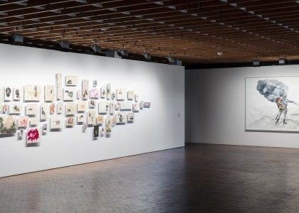
Firelei Báez, Those who would douse it (it does not disturb me to accept that there are places where my identity is obscure to me, and the fact that it amazes you does not mean I relinquish it), 2018, installation view at Akademie der Künste
The 10th Berlin Biennale curatorial statement doesn't look much different than one published in any previous biennale, or any other large-scale exhibition taking place in Berlin for that matter. The biennale doesn't live up to its ambitious curatorial statement. Conceptually, it veers very little from the so-called "existing knowledge systems" or "historical narratives" of how contemporary art is organized, displayed and seen in a city like Berlin.
The real "hero," and what perhaps challenges viewers' perceptions and expectations, is the choice of artists and artworks. The biennale boasts 50 artists, the majority of whom are actually African or of African descent. More than half of them are women. An irrepressible joy and true curiosity — maybe even delight — is brought about in seeing so many black faces and bodies adorning the walls and spaces of the prestigious Akademie der Künste or the "hip" Kunst-Werke Institute for Contemporary Art, one of the early contemporary art institutions to open in Berlin in the 1990s. But "refusing to be seduced by unyielding knowledge systems" doesn't seem to be an (apparent) part of that experience.
Is it futile to try to challenge these so-called knowledge systems? I don't think so. But using the exact same modalities of approaching, curating and displaying contemporary artworks does not work in favor of such a formidable task. It's clear that the curatorial team is right on in reflecting the urgent need to challenge established knowledge (probably stemming from the biennale chief curator Gabi Ngcobo's years working in South Africa and teaching about the need to address the way in which artistic practices are formulated and understood in postcolonial societies), instead of the business-as-usual of touting "radical artistic practices" that are mere gestures or completely consumed in their own performativity.
Organized across three main venues — the Akademie der Künste, the Kunst-Werke Institute for Contemporary Art and the Zentrum für Kunst und Urbanistik (ZK/U) — the biennale is sprawled all over the city. There are two more venues, but these are mainly for more performance-based work. It's almost impossible to see the majority of the artworks in one day, which is particularly challenging considering how expensive a single-entry ticket is (it comes in at 16 euros, where the average museum ticket in Berlin costs about 12 euros). Due to the biennale's size, one might need to buy two tickets at 32 euros to take time to see the artworks properly, or else risk frantically running all over the city to see everything before the spaces close between 5 pm and 6 pm.
I was fortunate enough to receive a press pass, but the notion of accessibility is at question, especially given that the biennale's funding comes from the German government, prompting further questions about art that is facilitated by federal money, yet inaccessible to the people. What kind of audience is expected? People of color? Immigrants? Africans visiting, like myself? The idea of challenging how we see and engage with contemporary artistic practices keeps coming to mind again and again as I walk from one venue in the east of the city to another at the opposite end, in the west. The question is pertinent to a city as heavily gentrified as Berlin, which prompts some interrogation of the usual narrative of contemporary art being a catalyst for such gentrification.
There can be no doubt that of the three venues, the Akademie der Künste has the most complex (dare I say "beautiful"?) display. Whether intentionally or not, the works seem to really inhabit the space and are in dialogue, formalistically at least, with each other. In the first hall, we are greeted with Firelei Báez's Those who would douse it (it does not disturb me to accept that there are places where my identity is obscure to me, and the fact that it amazes you does not mean I relinquish it) [2018]. A series of collages, the work includes historical maps and portraits, very delicately and meticulously painted on, playing on "Sans-Souci" (French for "carefree"), which was not only the name of a leisure estate owned by Frederick the Great, but also a castle in Haiti and the name of Jean-Baptiste Sans-Sousi, a general who fought against the French in the Haitian revolution. Báez imagines the interplay between these different histories, possible connections, fictive ones, or alternative narratives altogether.

Firelei Báez, detail of collage work with historical maps and portraits
Báez's work resonates with Johanna Unzueta's series of watercolors and pastels on paper, framed in plexiglass and wooden beams and which use geometric motifs and patterns from indigenous Latin American fabrics and textiles. The notion of fragility and precarious history dominate the visual landscape of the exhibition. Maybe she is proposing alternative ways of engaging this history, or imagining future uses for it? Perhaps.
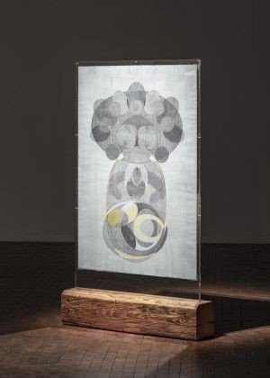
Johanna Unzueta, April/May 2016 NY, 2016, installation view at Akademie der Künste
If that fragility does not aggravate one's anxiety about historical narratives and indigenous knowledge and memory, Sara Haq's Trans:plant (2018) does. A series of reeds transplanted into all corners of the exhibition space blurs any sense of natural/artificial, fragile/solid, permanent/transient or even aesthetic/functional. The reeds are extremely fragile, and sometimes fall or are swept aside and replaced by the exhibition staff. I witness one such incident where a couple of reeds are swept away and I alert the exhibition staff. "Don't worry, this happens all the time. We will replace them," the lady tells me. I find there to be an exquisite tension between how irreplaceable every experience of the reeds is, and how replaceable they are as physical objects. I can bet that not one reed looks exactly like the other, and not one single experience of how the reeds are installed and seen by the audience is like the other. Such is history, I think.
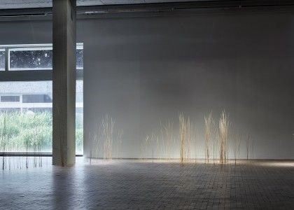
Sara Haq, Trans:plant, 2018, installation view detail at Akademie der Künste
More formalistically, Moshekwa Langa's Miracle in the Rain (2018), a series of large-scale painterly, textured works on paper, seems to be the perfect accompaniment to Minia Biabiany's neighboring Toli Toli (2018), with its delicate woven bamboo sculptures installed against the backdrop of a serene video projection of the sea and the island of Basse-Terre. The works almost look as though they were created by the same artist, and give a sense of exploring similar themes, albeit via different mediums.
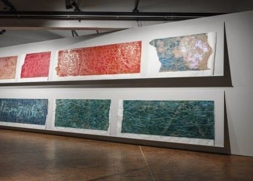
Moshekwa Langa, Miracle in the Rain, 2018, installation view at Akademie der Künste
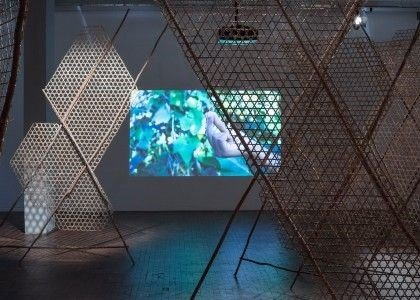
Minia Biabiany, Toli Toli, 2018, installation view at Akademie der Künste
But the real discovery in the Akademie der Künste is the enigmatic work of Belkis Ayón's (1967-1999) print series about the secret Afro-Cuban society Abakuá, a kind of an initiatory fraternity. Although a self-confessed atheist, Ayón's print series constructs a complex mythology on divinity, magic and the possibilities of them being an embodied social practice, while breaking a certain "aura" about these rituals and their symbolism in restaging them and producing them in this print format. Despite Ayón's remarkable use of iconography, the work doesn't seem to be in conversation with other works in the space.
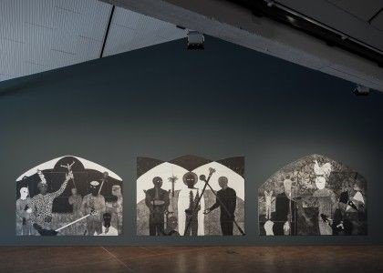
Belkis Ayón, exhibition view of print series about Abakuá society at Akademie der Künste
The works at the ZK/U also deal with themes of problematic histories and fictitious futures/presents. There, one would think that Tessa Mars' the Good Fight (2018), a series of drawings and mixed media that imagines an alter ego for the artist taking on the history of the Haitian Revolution, is in line with the work of Báez, or perhaps in dialogue with it. The idea behind the piece is that history is more connected than we think, and Mars' work is more radical still in telling the story from the perspective of a woman of color.
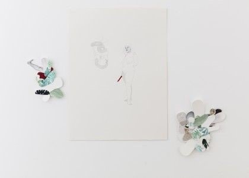
Tessa Mars, The Good Fight, 2018, installation view detail at ZK/U
Otherwise, the works in this space are in a more multimedia register, in the form of immersive installations. Three works stand out: Heba Y. Amin's Operation Sunken Sea (The Anti-Control Room) (2018), Emma Wolukau-Wanambwa's Promised Lands (2015) and Zuleikha Chaudhari's Rehearsing Azaad Hind Radio (2018). Each tries to unearth the moment of independence as one which creates a specific narrative, that in itself contains many fictions, but is perceived as a moment of objective truth at the same time. That ambivalence, maybe even deception, is reiterated throughout the three installations in various ways. Amin's footage of colonial and anti-colonial speeches, Wolukau-Wanambwa's fictional place that is both real and not real, and Chaudhari's questioning of the medium of performance itself as an unstable process, are just as problematic as these independence narratives. One can think of them as spatial/aesthetic propositions of re-imagining, a crucial exercise in a global moment of fascist, right wing theatrics.
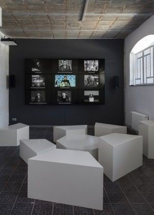
Heba Y. Amin, Operation Sunken Sea (The Anti-Control Room), 2018
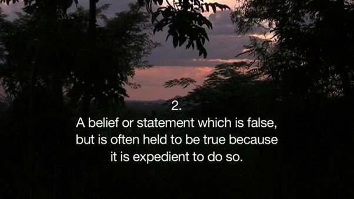
Emma Wolukau-Wanambwa, Promised Lands, 2015
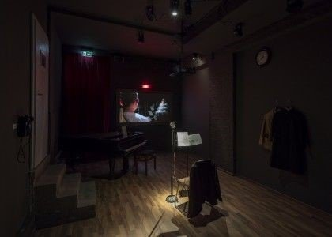
Zuleikha Chaudhari, Rehearsing Azaad Hind Radio, 2018, installation view at ZK/U
This just leaves the problematic Kunst-Werke, which has everything but the kitchen sink on display. It's a real challenge to navigate four floors of punishing stairs and close to 100 artworks that don't necessarily propose any connected narrative or tend towards a particular preponderance of form and practice. Maybe it ties into the absence of a "coherent reading of the present" referenced at the entrance of the exhibition space? The absence of a narrative thread made it very difficult to understand why the works are displayed the way they are displayed (if there is no coherent narrative) and why they were chosen the way they were chosen. One has to think that these choices were informed purely by the interest and aesthetic of its curators, which is a valid position, but one likely to elicit an equally subjective response from the viewers. Maybe this is the future of curating? No more coherent readings, but rather a spatial organization of affinities and taste? Könnte sein.
One encounters pioneering works of abstraction (several of Mildred Thompson's Woodcuts) next to quasi-Diane Arbus photos (Joanna Piotrowska's Frowst [2013-2014]); a very late post-Duchamp bronze readymade (Untitled [2015] by Luke Willis Thompson) next to a video performance of a reworked version of Oedipus tragedy (ILLUSIONS series [2016-ongoing] by Grada Kilomba); piles of ruins (Dineo Seshee Bopape's Untitled (Of Occult Instability) [Feelings], 2016) next to Mastur bar (an ongoing program of performances and lectures programmed by artist and poet Fabiana Faleiros), next to more abstraction (Lorena Gutiérrez Camejo's ¿Dónde están los héroes? (Where are the heroes?) [2016]). The melange of mediums and themes creates a cacophony that is confusing more than anything else.
And yet by sheer probability alone, there are also works that resonate with each other: the intimate, domestic scenes, gently depicted by Gabisile Nkosi (1974-2008) (mainly linocuts) resonate with the work of Willis Thompson, Autoportrait (2017), a silent 35mm film showing a black girl sitting with her head cast down, which segues into Liz Johnson Artur's Black Balloon Archive (1991–ongoing), showing black portraits she has been collecting since the early 1990s in no particular order or theme — just black people in their everyday lives and communities.
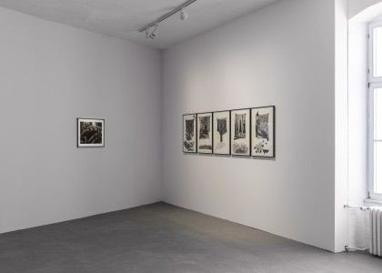
Gabisile Nkosi, installation view of linocuts at KW Institute for Contemporary Art
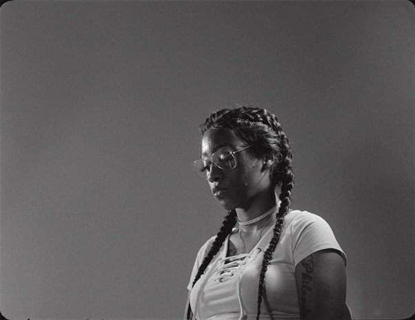
Luke Willis Thompson, autoportrait, 2017
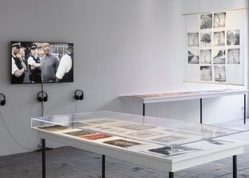
Liz Johnson Artur, from Black Balloon Archive, 1991–ongoing, installation view at KW Institute for Contemporary Art
Within the context of Germany, where an extreme right-wing party is sitting in its parliament for the first time since World War II, and the backdrop of a Europe witnessing the growth of political parties running solely on platforms of xenophobia, Islamophobia and anti-immigrant sentiments, all churning out rhetoric steeped in false history and intentionally misleading the public, it's to be expected that some equally challenging ways of seeing, imagining and understanding history should be thrown back. But the biennale's approach on its own is nothing new. Artists and cultural practitioners in Africa have been involved in decolonization projects for the past 10 years or more. As a matter of fact, not a single major exhibition, conference or serious cultural event currently taking place in Berlin doesn't have the catchphrases, "decolonization," "colonial" or "complicating narratives."
Is there a way a work can be made, curated and displayed without having to be in conversation with the "white man?" This is not to exonerate the white man, or ignore the colonial past, but to come to a point where we are not just responding to whiteness, but creating works that speak our truth, interests and desires. And if that necessitates looking at history, as it very well might, and examining it, or complicating it or whichever term is currently in vogue, then that is fine, but at the very least the works must move beyond the centrality of whiteness, acknowledging its presence but not taking it as an interlocutor.